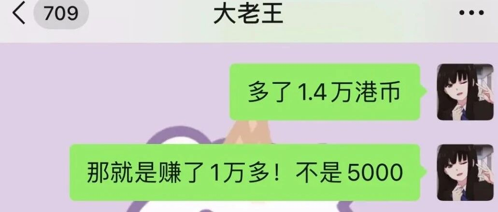

看完这本书，我一天赚了2000块！
点击关注秋秋很开心
每周一篇好用APP、学习、成长干货

图：@秋秋
文：@秋秋
大家好，我是秋秋。
好久不聊理财的事，因为我最近办了港卡，光忙着打新和股票了。
我和小王是5月办的港卡，总计三个月，去除手续费和成本，发现3个月赚了1万多。

（昨天刚对完账）
其实我们没有买很多股票，总共操作也就两三次。
中了两次新股，卖掉。一个上涨了44.35%，本金4000变7000。

一个涨了15%，当天卖掉赚了2150。

之后很久都没有新股了，就不动。7.29买了点美团股票。
昨天高点一出，一手赚个1700。

当然我买了3手，都出的话可以赚快5000。
这样也没有焦虑的看涨跌，操作不多，收益还很可以。

不过我发现，理财这个事，其实最大的还是和心态有关。
和我们一起入港股和其他朋友，操作更多，却还在亏着……..
 、
、
1、我觉得可能没有策略
比如光想着买了，没有计算手续费成本这些。
有时候你觉得自己买在低点了，其实没发现互联网可以更低。
2、也许心态没准备好
很多人亏了就开始说买基金、搞理财不好，那大多数可能没搞明白理财怎么回事。
其实理财就是你买这家公司或者一个行业的未来。这个和很多政策、发展前景、情绪有关。
心态不好赚了也拿不住。我知道未来我也会亏，但是看好行情好好拿着，不看好的行情，及时止损。
说到心态，总结一点就是：平和。
我最近看了一本书，和理财没啥关系，但还是推荐大家看一看。
《心的千问》

它能很好帮你解决心态问题，不管是各方面，看完你就会觉得世界都顺畅了。
作者是庆山（以前笔名安妮宝贝）。
这本书是把她给读者的回答做了一个合集，看完就4个字：人间清醒。

我摘录一些片段，你们先感受下。
101 异地恋应该怎样比较长久？
答：结束异地恋会比较长久。
173 怎么治玻璃心？
答：多摔打几次。让它先碎裂。
180 可以给一个二十四岁的年轻人一些建议吗？
答：多尝试。多吃苦。多读书。多做事。
314 如何调整一颗浮躁的心？
答：先做到少看手机。
针对20岁左右的女生，她也给了很多实用建议：
511 怎样读完大学才是有意义的？
答：不要单方面地只是追求学业成绩与未来求职，要考虑到任何一个人作为个体，是整体性、综合性的存在。
我们更需要清楚自己身而为人应该具有的方向。像一棵树，去茁壮和关注自己的根系，让它深入和有力。这样未来才会有更多的枝叶、花朵与果实。
473 如何度过二十几岁的时光，才算是没有辜负青春？
答：与现实共处，去认真而努力地生活。
恋爱、旅行、阅读、学习、交各种各样的朋友、经历各式风景与人情。而不是活在网络、幻想当中，好高骛远，散漫度日。

当然，给30+的建议也有：
440 女人到了三十岁以后，哪些事情多实践会有益处呢？
答：一、要通过阅读、进修、学习，持续深入地自我教育；
二、努力工作，有独立经济能力；
三、懂得爱人，值得被爱；
四、不迷恋物质，不追剧，多旅行，多帮助别人。

里面还分为关于生活、行动、内心秩序….
涵盖的内容很多，你可以从方方面面得到答案。
其实有时候，心态平和我觉得是解决一切烦恼的利器。
如果你做不到，也有很多疑问、对未来迷茫，那么不妨读读这本书。
不管理财、做视频、工作，我们学习的很多本领可能是外在技能，而只有“心”的问题得到解答，万事才会顺畅。
老规矩，评论区揪3个人送一本，留言就行～
迫不及待的也可以自己购买，阅读原文是购买链接哈：
这里是购买链接🔗